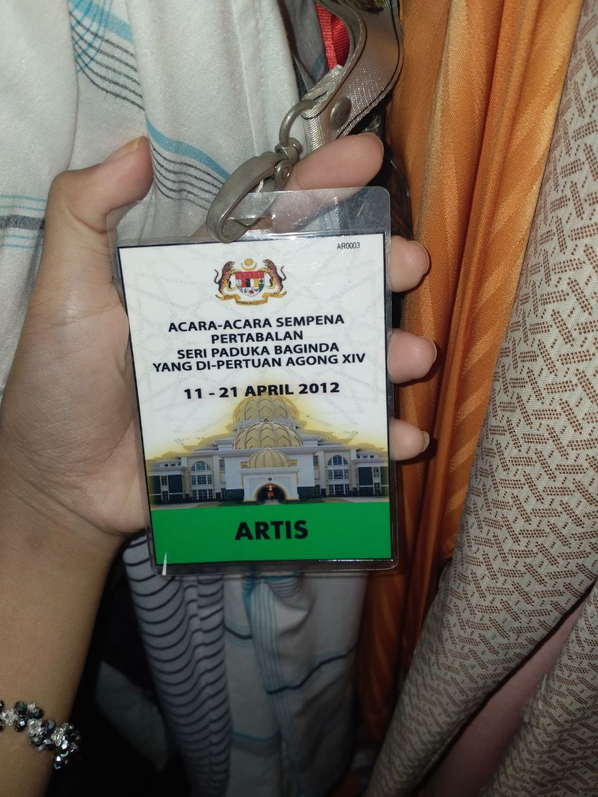
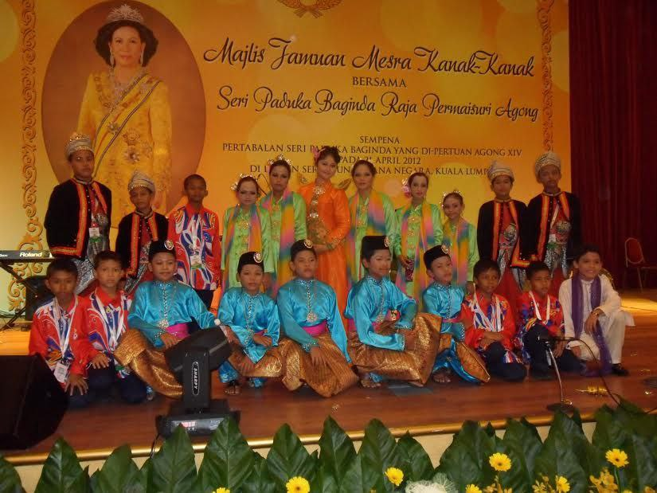
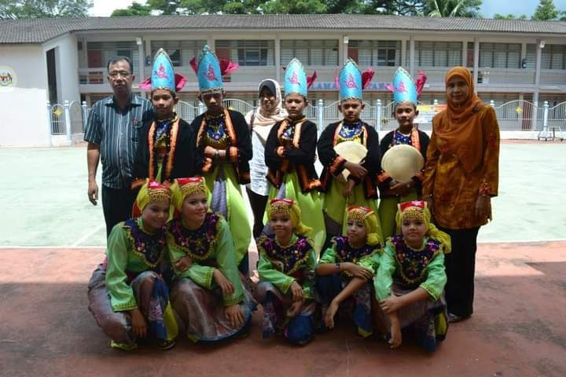
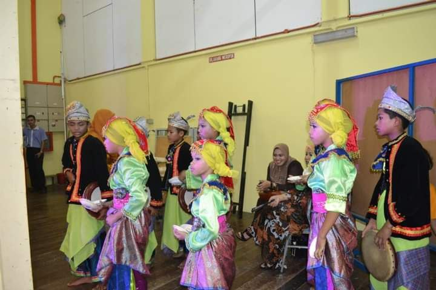
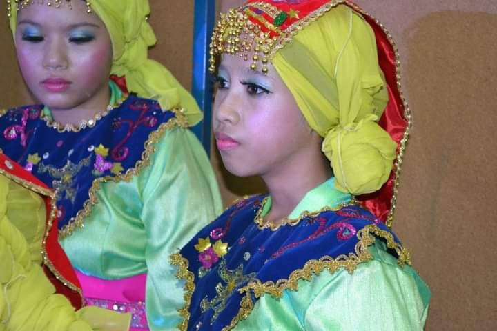

An experience can be defined as an encounter is something you do or that happens to you, particularly something important that affects you. through experience also we can learn about past mistakes and take lessons and will not repeat the same mistakes. Moreover, experience also teaches a person to become more mature. as a normal human being I also have experiences of love and sorrow that I have gone through. for me, all that has taught me to be a mature human being later.
Among the experiences that I will never forget is that I used to work part-time after taking my SPM certificate in high school as a waiter. I worked for 5 months until I was offered to continue my diploma level studies at UiTM. During the 5 months of work, I gained various memories of love and sorrow. I have settled in my eldest sister's house in Perlis. I go out to work as early as 8.30 am and leave at 6.30 pm. At that time the salary I earned was not so much because my salary was determined by the daily sales revenue. at first I was so tired after coming home because this was my first work experience. But after a week of work, I was used to this situation. I decided to work part-time because I thought before I was offered a university it was better for me to do something that benefited myself. moreover, by working I realized that to make a living is not an easy thing because I come from a modest family and are not taught luxury. If I want to get something, I have to work so hard that I can get something. moreover, the salary earned will be kept by my mother because I intend the money collected is to continue my studies. I want to ease the burden of both my parents to bear all my study costs. moreover, with this work I also find I have more confidence to hang out with people because I am a quiet person when communicating with strangers. Indirectly, my confidence level to get along has increased. I was also taught to prepare food for customers. This experience was so meaningful to me because it has taught me to be a more mature person. Among the salary that is a success for me is that I can afford to buy a new smartphone and pay the first semester tuition fees using my hard earned money.
I also had a very sweet experience when in primary school where I and a member of the dance group SK Haji Ismail to represent the state of Kedah to perform in conjunction with the Coronation Ceremony of His Majesty the Yang Di-Pertuan Agong XIV. My friends and I are so excited because this is our first experience of entering the National palace. This experience is so valuable to me because it cannot be traded. At that time I was 12 years old on 11-21 April 2012. I was so excited during our trip there because this is the first time this dance club performed a big performance in front of the Yang-Dipertuan Agong. During the ceremony there was a program called "Child Friendly Banquet with His Majesty the Raja Permaisuri Agong" where we were assigned to perform. My friends and I are so excited to be performing in front of a special guest. Every free time will be used by our dance teacher, Cikgu Anuar by doing exercises so that we do not make mistakes on stage. Other than that, I was also so excited as we were touched by the variety of delicious food. When the ceremony was over, we were given souvenirs and certificates of appreciation by the palace to take home. For me this is a very meaningful experience because not only do I bring the name of the school but also bring the name of the State of Kedah to the national level even if it is just a dance performance.
 
Apart from that, the most meaningful experience while in primary school was when I and a member of the SK Haji Ismail dance club participated in the Kedah State Dance Competition in 2011. At that time we represented the Kota Setar district to participate in the competition. We did a "Plate Dance" which for me was quite interesting because we used equipment such as plates and candles while performing. My other friends and I were so nervous that we were worried if we made a mistake while performing. After that, the announcement was made and we got the first place in the Kedah State Dance Competition. Kmai is very happy because it has made the name of the school famous to the Kedah state level.
  